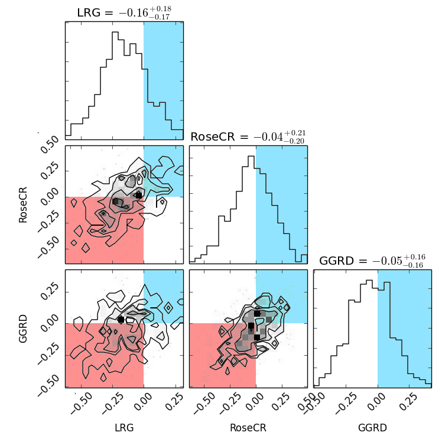

Fierce Valley Roller Girls: Five Years On
In November 2010, three friends decided to try to set up a local roller derby league, and Fierce Valley Roller Girls was born. I spoke to the league founders, V for Vienetta, Grizabelta and Kirk Jammett, for their thoughts on the last five years.
What prompted you to establish Fierce Valley Roller Girls, and how did you get started?
V: I had been following ARRG for a while and was interested in derby then after finaly seeing a bout I took Griz and Kirk through to see ARRG's next one. I quickly realised I wanted to be involved in some way with roller derby in Scoland and started to look into learning to ref. At this time Scotland only had leagues in Aberdeen, Dundee, Perth, Glasgow and Edinburgh and we joked about starting one in Falkirk, the joke continued on for a couple of weeks where it then started to become more serious and then before we knew it we were looking into equipment, finding out about rules, skating, training and trying to find a hall to put this all together.
G: Our own laziness! V had convinced Kirk and myself to go along to an ARRG bout, and we were instantly hooked. We spent the entire journey home discussing how we could go about getting involved, but living in Falkirk, our nearest leagues were Edinburgh and Glasgow. I already spent a lot of time out the house with my other hobbies (outwith derby I'm a band geek and hospital radio DJ!) so wasn't keen to add more travelling to my week, and eventually 'if only there was something closer' turned into 'we could make this happen if we try'. It was really the boys' vision – but as a predominately female sport at the time, they thought it a bit inappropriate to approach sports halls on their own to try and bring this amazing women's sport to Forth Valley – which is where my involvement really came in! As the radio station is a small charity, I was fortunate to have the knowledge behind me of how to run not-for-profit organisations (or at least know the principles of how to run one!). We managed to convince Bo'ness Recreation Centre to let us skate around for a bit, and after a meeting in a pub to gather some interest – Fierce Valley Roller Girls was born!
K: Marco has been pestering us to go to a - then bout - with him, so we finally took up the chance to go see ARRG play. Then followed a rather excited train journey home about what names we could have, and if we could really create our own league in the falkirk area. A few weeks went by and I got in contact with Marco again and said that if he was serious about starting it to count me in.
What difficulties did the league face in the early days? V: I would say our main difficulty much like any other derby league at that time was getting a hall to practice in. We went round visiting all of the local sports centres/halls speaking to the managers to no avail, we even looked into other halls in the hope of someone letting us. For a while there was a real fear that we would never be able to get somewhere but thankfully Bo'ness Sports Centre said yes.
G: Getting a hall! So many halls had inappropriate floors, and those that didn't were reluctant to let us skate. Bo'ness used to host roller hockey, so we took a chance with asking them, and thankfully they said yes – but even then only for a trial period. Back then we couldn't afford a full hall either- we had 2/3 of a hall, with a net wheel trap!!
K: The basics - getting a hall that was happy to let us skate in without damaging the floor. So we gathered as much information about the sport, and the different requirements needed to play the sport and tried every hall we could think of to let us just skate on their floor before we even considered the basics of roller derby and getting others interested. Weeks and weeks of every free moment contacting, and researching halls in the area to either be ignored or told ‘no’. 2 men turning up and saying we’re looking to start an all female sport in the area was confronted with many confused expressions. However we decided to give Bo’Ness Sports centre a stop by one day just to see - even though we’d been advised they’d banned skating in their halls. We gave the centre manager the run down on what we needed, and what our plans were going forward, he was kind enough to give us a tour of the halls available, and then offered us a 6 or 12 week probation to make sure there were no issues. And we never got kicked out.
What roles did you play, and how have these changed over time? V: For the first three years I was quite involved in the running of the league as the vice chair, I was also on a few different committee's including our Sports and Training. As time went on and as I got involved in Men's Derby I took less to do with the running of the league but am still involved in different committees within FVRG and find myself helping to train our new refs.
G: I think I've done everything and everything haha! Managerial-wise – I held the position of Chairperson for FVRG's first 4 years, which was amazingly rewarding and frustrating all at the same time! I took a step down last year to arrange my wedding, but also because I think you do get to a point where you just start to run out of ideas – you need that different perspective for a while. I'm now one of FVRG's UKRDA reps, which I'm still very much adjusting to – the whole 'big fish small pond' to 'small fish big pond' thing! Front-of-house so to speak, I started off as a skater (it's really odd seeing old pictures of my in my Parma Violents top!) but used to get far too nervous and basically just get jelly legs and spend all my time on the ground... Tried my hand at line-up manager a couple of times, and did a few games as bench coach, but then I settled as a full time NSO. NSOing was just something I started doing so I didn't have to sit on my own while Kirk and V were reffing, so I'm always slightly baffled as to where it's taken me!
K: Being the people with the crazy notion of starting this we got voted in as Chairperson, Vice Chair, and board member at our first AGM in Weatherspoons in Falkirk that memorable November evening. With relatively low numbers we took on a lot of other tasks, such as sourcing designers to come up with our branding, then obtaining our first range of merchandise. Where possible we focused on keeping these to local businesses to help the area as well. While the structure of the league has remained - if not grown - things are generally run in a similar manner, but with more and more experience coming into the league and taking on the different board, and spokesperson positions which are available.
How has the league grown over the past five years? V: FVRG has grown in so many different ways and that is all thanks to its members. We started as a handful of people in half a hall skating once a week to a league filed with skaters, refs, dedicated NSOs and off skate members. We run 4 sessions a week covering all skating levels within the league. Our bouting team is sought after to be played against and has risen sharply up the rankings in the last couple of years and our officials travel all over reffing derby at different levels.
G: We've certainly got a lot more structure – we're run more like a business now than just a group of friends muddling along.
K: Oh whoa! How has it grown! From 5 people skating in a badminton court in Bo’Ness to 4 regular training sessions spanning all levels of skating, to continually growing our knowledge and numbers in not only skaters but officials. And while we see friends moving on to bigger things, personally and in derby, our little league keeps pulling in the numbers and growing all of the time.
What are your personal highlights and proudest moments? V: It has been great to see the league build up from its formation and its members develop in their roles and watching the team grow from their first bout to now.
G: It's always hard to single out a particular moment – I'm always proud of what our members achieve, on and off track. What does warm my heart though is when I see the friendships that have been formed through FVRG – people who are now the best of friends, who may never have met if they hadn't taken a chance on coming along to a Fresh Meat session one time. Or the transformation of those who are so quiet when they join, to becoming a confident and assertive individual.
K: Personal highlights? Working with the vast number of amazing officials in Scotland, and somehow moving from just standing up in my skates to being picked to represent Scotland’s officials at the first Men's World Cup in Birmingham. While it’s been a lot of work to get to this stage, it certainly wouldn’t have been possible without everyone who has given me feedback and having the faith in me. Proudest moments, would be seeing what seemed like a crazy idea one afternoon has become something not only we can be proud of, but everyone in the league who keeps pushing the league forward. That and seeing referees who I’ve helped train go on to do amazing once let loose on the world.
You were all involved in the first ever Men's Roller Derby World Cup, as officials and as a skater - how was this experience for you? V: It was such an honour and privilege to play and represent Power of Scotland at the first Men's Roller derby World Cup. Between the training on the run up to and the actual world cup, it is an experience I could never forget as there are so many fond memories. The camaraderie between all the teams/skaters was amazing with everyone helping each other out, I got to meet and skate with/against some amazing people from all over the world and the atmosphere between us all in the team area just bfore the closing ceremony was unforgettable.
G: Amazing! To get to work with some of the best officials in the world, while seeing some of the best men's skaters in the world – I think I spent the entire time starstruck! I was very much the newbie in my crew (when we introduced ourselves it was lots of 'I'm xxx, Head Ref/HNSO of xxx', it came round to me and I was like 'I'm Griz, and I like to NSO'!!) but I learned so much from them and they looked after me amazingly well, especially during what ended up being a quite challenging time personally for me.
K: So many different emotions happened that weekend. From feeling like the least experienced person in my crew - A lot of high level referees were on my crew. To being given amazing feedback on my refereeing, to then some stressful stuff happening closer to home, to then being picked to work on the last 3 games for my crew. Embarrassment, and a lot of laughter at the support I was getting from back home. I still look back at that weekend and love all of it. One of the hardest parts was being part of the crowed during the PoS and America game and staying completely impartial. Also, I missed every single Scottish point - every time I left the track they scored! My crew was up next so I couldn’t hang around and watch.
What advice would you give to a new league starting out? V: I think the best advice would be not to rush and take your time. Build up your league and tune those skating skills so you are all ready to play together as a team, it can be tempting to start playing before you are all ready. Also make friends and build bridges with other leagues, you never know how much help they will be able to give you and how much you may need them in the future.
G: Be prepared for a lot of hard work! There are a number of reasons why people want to start a new league, but there will always end up being policies that need to be written, meetings to be had – and no matter what you do, you'll never please everyone all of the time!
K: Take as much advice as you can. It’s hard, it’s stressful, it takes all of your time and hard work, but seeing so many happy faces make it worth it. You’re going to make mistakes a long the way, and recognising and learning from them will help move the league forward. Most importantly, have fun.
How would you like to see FVRG develop in the future? V: I would like to see FVRG keep pushing forward and building their team and experience whilst developing all their upcoming skaters, hopefully long term get a 2nd team and who knows, even join WFTDA.
G: Well our goal for now is to work towards becoming a WFTDA league – but that has been our goal from the outset and it will take as long as it needs to take. We've spent a lot of work in the past year determining our vision, mission statement and values, and everything we do ties into these, so we're becoming much more aware of how the little things we do tie into the bigger picture. I'm always really proud of our community involvement too, so I'm hoping this will continue! And of course, I just want everyone to enjoy being part of FVRG, no matter what role they play :)
K: While there are the obvious ones of continuing to climb the rankings in Europe and UKRDA, and also joining WFTDA, just being where the league needs to be at that point in time.
Dundee Home Seasons Final!

Last weekend saw Glasgow and Auld Reekie hold their Home Teams finals for 2015, and Dundee Roller Girls are following hot on their heels. This Saturday 5th sees the final of their Home Season, which should see the Jutes of Hazzard playing the Press Gangsters for the trophy. Third placed team, the Jammin' Dodgers, will be taking on a mixed team of skaters from other leagues.
Previous games this season saw the Jutes defeat the Jammin' Dodgers by 144 points to 130, and the Gangsters similarly narrowly triumph against the Dodgers by 153 : 146.
The first match up of the season pitted the finalists against one another, with the Gangsters pulling a close win against the Jutes, with the final score 171 to 154, after a tie at half time! With scores this close, the result of the Final is impossible to call, so the only way to find out who wins will be to turn up at the DISC on Saturday.
-
The weekend also sees Dundee's end of year awards ceremony, which is a more private affair. However, fans of the league have been asked to cast votes for the Fan Favourite award, given to the most popular member of the league (including referees and NSOs). The single question survey can be found by following this link.
The Dundee Roller Girls Home Season Final will be at the Dundee International Sports Centre, Mains Loan, Dundee. Doors open at 12:30.
Once Upon a Skate...
Join Fierce Valley Roller Girls as they end their year with an exciting double header! Up first will be Fierce Valley Roller Cubs, Scotland's only junior roller derby league, in a Goodies vs. Baddies intraleague. Fierce Valley Roller Girls will then be joined by skaters from Bairn City Rollers, Mean City Roller Derby and Lothian Derby Dolls to face off as Storybrooke vs. Enchanted Forest in a Once Upon A Time themed game.

Since the venue is rather 'intimate', we recommend buying your tickets in advance to avoid disappointment. Tickets are priced at £5 in advance/£7 on the door, and kids under 14 go free with a paying adult. Tickets are available in advance here.
Doors will open at 3pm for a 3.30pm start. As always, there will be a selection of handmade crafts, home-baking and team merchandise for sale.
VegFest Scotland meets Derby!
This December, the VegFest vegan festival series will come to Scotland for the first time, and Glasgow Roller Derby will be there to tell them all about Roller Derby.
VegFest started out 12 years ago as a Bristol based festival, but has grown over the years, with a year-round calendar of Vegan events spreading to Brighton and London. 2015 is the first year that the event has made it all the way up north to Glasgow, however, where it will cap a week long "The Only Way is Ethics" festival on ethical issues in general.
Roller Derby has always been pretty vegan and vegetarian friendly, so it's no surprise that GRD are getting involved with outreach in these events, especially as more than 40% of the Irn Bruisers roster is vegan! Their presentation will cover not only what roller derby is, for the non-derby audience, but also how one can maintain a vegan diet whilst training for a WFTDA Division 1 team.
We're planning on interviewing Glasgow's Sarah McMillan, Mona Rampage and Haberbashery on their experience of VegFest, but we encourage you to go along and experience it (and their presentation) for yourselves!
VegFest Scotland will be hosted in the SECC on the weekend of the 5th and 6th of December. GRD's presentation is scheduled for 4pm on Saturday the 5th.
Getting to Know Power of Scotland
This weekend will see Birmingham host the 4 Nations Roller Derby Tournament. This weekend's extravaganza will feature Team England, Team Wales, Team France and Team Scotland. I managed to wangle an opportunity to speak to 3 members of Team Scotland's Power of Scotland; Andy Morris, Skate Plissken and Chris Mathieson, mainly I wanted to be nosy about how the Power Scotland have been preparing for the Wold Cup in Calgary. Since starting this blog piece, I have been informed that Plissken and Chris Mathieson have been voted in as the captains of Power of Scotland, huge well done!

Left to right: Mathieson , Plissken and Morris (photo credit Nikki Morris)
So, in the style of many tv hosts, I kicked off by asking a bit more about the individual skater, their history with sport and team affiliation.
First up was Plissken.
How long have you been skating for?
Come January, 3 years, with no real prior skating experience…
Which team do you currently skate for?
Nottingham Rolled Derby’s Super Smash Brollers!
Do you have a history in any other sports?
Yeah, I grew up playing rugby, then moved on to American football for a little while when at uni…
Next up was Chris Mathieson, also known as Pudz and 'that guy who scored the first points in Power of Scotland vs Team USA in the 2014 Mens Roller Derby World Cup'.
How long have you been skating for?
I have been skating since July 2011, so just under four and a half years
Which team do you currently skate for?
Granite City Brawlermen from Aberdeen and Power of Scotland
Do you have a history in any other sports?
I used to play football as a kid but I wasn’t great at it, other than that a little bit of street hockey when I was 10 but I sprained my ankle once and never put on a pair of skates again until I tried roller derby.
And my last victim for interrogation was Andy Morris.
How long have you been skating for?
Since the Brawlermen started in November 2013, I did my first scrim in December 2014 after the Womens World Cup.
Which team do you currently skate for?
Granite City Brawlermen
Do you have a history in any other sports?
I played Rugby at school, I snowboard, Surf, Cycling, Motorbikes I’m a petrolhead! Pre Selection
So then I wanted to learn more about the selection process for Power of Scotland.
When did you first try out for Team Scotland and did you try out more than once?
Plissken
There were 2 try out selection dates; I could only make one as SSB were playing a game on the other, so I went up in May having no idea what to expect. A little nervous to say the least! But after 4 hours of skate drills, derby drills and an hour scrim I felt good about how I had performed… followed by the news I had made the 30-strong selection squad!
Mathieson
I attended both tryouts in April and May 2015, and then we had to wait a month or so for the decision. It felt like forever between tryout and selection which is understandable as the quality in Scottish roller derby has increased so much since the last tournament in 2014.
After making the 30 we had to train as a team for the next 4 months in the run up to a selection bout hosted by the lovely Dundee Roller Girls. The 30 played against each other in this game showcasing the best talent in Scottish men’s derby. It was a high pressure game but with a score tied until the last jam it showed how well the teams were split which made it even more exciting.
A week later we found out if we had made the squad going to Calgary. I found out the news just as I was flying to London for a weekend away so a fair few celebration drinks were had and maybe even a wee visit to Double Threat Skates to get sized up.
Was there a long wait before you knew about being on the top 20 squad?
Morris
The email for the final 20 came through a week after the PoS vs PoS game, that was the longest week ever.
Plissken
Once I had made the selection squad I knew I had to work hard, so I went to the 4x training sessions and 1x Scotland v Scotland (two teams made up of the selection squads) and took everything I could from each session, going back to my home league with something to work on. We were told in the first week of November if we had made the final 20, news I was very relieved and excited to hear. Now we have our final 20 we are working towards what we can take to the world cup and showing the world we the Power of Scotland can do.
We then went on to discuss how selection for the Mens' Roller Derby World Cup had impacted their training regimes. I've seen various skater training videos (and some montages) going around on social media, so I wondered if this was typical behaviour and the guys did not disappoint.
Have you changed your training regime since being selected?
Plissken
Absolutely! There was no way I was going to meet other world class teams without stepping up my game. I joined a gym (not been in years), started eating better, and am currently well on the way to quitting smoking! At the gym I have been working on strength training, HIIT training (if you don’t know it, check it out) and over all endurance. This is to help strength, balance, speed and recovery time between jams. I’ve cut out take-outs, pop (well, mostly ;) can’t beat a pre-game irn-bru) and snacks (and I tell you, you don’t want them as much as you think you do!)
Morris
I attended the gym on the run up to the PoS vs PoS game and pre tryouts quite a lot and since then I’ve taken it easy, come January I’ll be back to 5 -6 days a week. My diet hasn’t really changed a huge amount, I eat a lot of protein otherwise I don’t have the energy levels to play my best.
Mathieson
I’ve been focused on making the Calgary squad for the last year, so have been hitting the gym since January, including some 5am sessions. There have been a few blips in the training regime and diet along the way but since making the 20 I’m back properly at the gym in preparation for 4 Nations. I also cut McDonald’s out which used to be my standard post game/training meal, which is tough seeing as there’s at least 4 between Grangemouth and Aberdeen.
I then wanted to find out more about Team Scotland training. The roster for Power of Scotland features skaters from Scotland and England and as small as the UK is, so it can't be easy gathering everyone together for training. Team Scotland training takes place once a month in Grangemouth Leisure Centre, from 2016 this will increase to twice a month in the run up to the Mens Roller Derby World Cup. I wondered if this regular travel necessitated taking time off of work.
Plissken
It’s a 700mile round trip for me but I generally don’t take time off. It’s travel up, train for 4 hrs, travel back down, all within about 30 hours...and the rest!
Mathieson
We’ve been training monthly pre final selection but are ramping it up to twice a month in the new year. We train in Grangemouth which is about a 5 hour round trip from Aberdeen. It’s a long journey which I’ve sadly gotten used to and am currently looking into the options of a timeshare there with Momo. No time off work, but maybe just a little tired the next day.
Morris
We’ve been training once a month but from January onwards its every two weeks. I think there will always be things getting in the way of training even more so for the guys down south, cost has a large factor.
Taking a team of 20 plus bench and lineup and management is expensive no matter where you go but Canada is pretty far away and flights are not cheap. Next I quizzed the chaps on what they are doing in order to raise funds for this amazing opportunity.
Mathieson filled me in on Power of Scotland's fundraising activities.
We have a few fundraising events on at the moment, there are 3 skaters fighting it out to raise the most money to avoid losing their beards, craft fayres and some guest coaching sessions all over the country. I’ve just been up to Elgin training Helgin Roller Derby and Inverness City Roller Derby, which was a pleasure, giving some of them their first experience in wall and pack work drills.
We also have a general fundraising page, which if anyone has a few pennies to spare to help the team it would be greatly appreciated.
http://gogetfunding.com/allpowernobull/
We are proud again to have our uniforms sponsored by MP Locums. MP Locums place Hospital Doctors and GPs into locum work matching your experience and qualifications to your professional goals and ambitions. As a preferred supplier to NHS Scotland they have a variety of locum positions short and long term available throughout Scot

land.
And finally we got onto the subject that so many of us as looking forward to, the Mens Roller Derby World Cup 2016. The Men's Roller Derby World Cup 2016 in Calgary will be a first time for Morris and Plissken with Mathieson making his second appearance.
What part of the World Cup are you most looking forward to?
Morris
The atmosphere at the last one was incredible, I can’t wait for that excitement again
Plissken
To be honest, challenging myself against other national skaters, I know it’s not going to be easy but how good is it going to feel if I can get lead on Johnathan R? We can all dream.
Mathieson
Other than going to Canada, which is number 2 on the list of countries I’d love to visit, I’m looking forward to the challenge of our group stage. It’s been described as the ‘Group of Death’ but I think we can come out of it strong and it will make for some exciting games.
Which Team are you most excited to play against?
Mathieson
I’m looking forward to us playing the USA again. Last time we managed to score 40 points against them which was a big deal and I think with the team we have this year we will show them how far Scottish roller derby has progressed since then. Goal – first blood!
Plissken
All of them
Morris
USA, that’s the dream but I’m sure its everyone on the team has the dream to be selected for it.
If you could be in any other bracket, which bracket would you choose and why?
Plissken
I wouldn’t! we have a great set of teams to play, and we have the 6 teams instead of 5 so we get loads of games to play, plus I get to go against the giants, Team USA.
Morris
I don’t think I would chose any of the other brackets, the bracket we are in will be the one to watch ☺
Mathieson
I’d go into the Orange group so that we could play against Argentina, they were the heroes of the tournament last time, El Pibe <3!
This will be Mathieson's second time representing Power of Scotland in the Men's Roller Derby World Cup. I wanted to find out if this had had an impact on his 2016 training regime.
You played in the World Cup in 2014, are you doing anything different this time to prepare?
The last tournament was one of the best weekends of my life but on the lead up to it I was studying for my professional exams so I had to juggle the two with derby sometimes taking a back seat. This time around though this is my main focus and I’ll be putting everything I’ve got into it, attending as much training and scrimmage as possible. I’ve watched the footage of myself in the last world cup and although I scored the first points against USA it’s a horrible jam to watch, so many falls. But watching it back gives me the drive to do better this time round, upping my game and upping my fitness.
And finally I asked for their predictions for the World Cup...
Mathieson Scotland to lift the trophy!
Plissken There’s going to be a lot of talent, so I predict a lot of cheering (please!)
Morris
USA for the win, Canada/England for second and third and I think Scotland defiantly have the potential to better the last world cup position, it’s a very strong team!
A huge thank you to Mathieson, Morris and Plissken for taking the time to answer my many, many questions. Wishing Power of Scotland all the luck!!!
"Shear brilliance" fundraising for Power of Scotland

Scottish Men's National Roller Derby Team, Power of Scotland, are off to Calgary next year to compete in the second Men's Roller Derby World Cup.
(They're also off to the 4Nations tournament this weekend, to play against France, Wales and England, which we'll have some reporting about after the event.)
In support of their expenses in travelling across the Atlantic to represent their country, Power of Scotland have planned a packed fundraising event for the 13th of December on the theme of "Beards, Brains and Brainpower".
The "beards" component will be represented by the result of the Sponsored Beard Shave contest. Three Power of Scotland more hirsute skaters - Bairn City's rEd Baron, Wirral's 12 Gauge and Mean City's Optimus Grime - have been competing to collect sponsorship funds. At this fundraiser, the skater with the least funds raised will be professionally shorn of their carefully tended facial hair.
Meanwhile, the "brains" component is provided by a Team Quiz Night, featuring multiple rounds and multiple prizes. Teams are limited to 5 people. The quizmaster, Alan Muir, has been working hard on fiendish practical puzzlers, so we anticipate a challenging event.
Of course, the "beers" element is provided by the host venue, The Raven, at 81-85 Renfield Street, Glasgow.
The night of fundraising will start at 18:45.
ARRG and Glasgow Home Seasons Final!
This Saturday (28th November) sees Home Teams Tournaments on both coasts, as Glasgow Roller Derby and Auld Reekie Roller Girls both host extravaganzas.

Glasgow Roller Derby are rolling their entire Home Season into one giant event, with the Bad Omens, Death Stars and T-Wrecks playing each other in a 5 hour triple header tournament. Last year, the Bad Omens took the trophy, but nothing is certain with the new format! As well as GRD skaters, the teams will be filled out by a few guest skaters from other leagues. Doors open at 11:30am, for team skateouts at 11:50, and first whistle for Bad Omens v Death Stars at 12midday. As always, sponsors Pinto will be hosting the post-event food.
Tickets are available from Eventbrite (£5), or on the door for £7. As always, the venue is the ARC Sports Centre at Glasgow Caledonian University.

Meanwhile, on the other coast, Auld Reekie's Home Season will be coming to a triumphant conclusion with the Home Teams Final Double Header. As well as the Final itself, which sees the Leithal Weapons play off against The Skatefast Club for the 2015 trophy, third-place team the Cherry Bombers will take on mysterious guest team The Rolling Bones. Last year, The Skatefast Club managed to take the win over the Leithals, so this year's repeat should be even harder fought, as the Leithal Weapons seek to redress the balance. (The event will also be preceded by the Auld Reekie Derby Taster Session, so those interested in seeing what Roller Derby is all about can make a whole day of it!)
ARRG has arranged a special license for a bar, and there will be both half-time entertainment and a charity fundraising raffle. There will also be separate seating areas for families and young children, and a children’s craft corner to keep the youngest fans amused.
Tickets are £6 in advance, £8 on the door, available on Brown Paper Tickets. Unwaged and Senior (over 65's) fans can enter for the discounted rate of £5 per ticket, and disability leisure card holders and a carer may enter free.
As always, the event will be held at Meadowbank Stadium, on London Road. Doors open at 1pm for a 1:30 start.
Fierce Valley Hope for Promotion at British Champs Tier 4 North Playoffs.
This weekend sees the culmination of the British Championships season the Tier 4 divisions. The promotion and relegation structure of British Champs is a little complex, but essentially, several playoffs are being held, each offering promotion into the corresponding Tier 3 regional division for their two finalists.
The Tier 4 Northern Playoffs, offering promotion into Tier 3 North Division, see Forth Valley's Fierce Valley Roller Girls playing off against hosts Preston Roller Girls, Hallam Hellcats and Wolverhampton Honour Rollers for those top places, combining the top teams from Tier 4 North and Central North divisions.
We caught up with FVRG Team Captains Thump'her and Calamity Jen to hear their thoughts about the whole British Champs Tier 4 experience.

Firstly, when you signed up to British Champs, near the end of last year, what did you expect out of the series?
As a team we were hoping to gain more experience, try out new ideas from training and meet a group of great people, all of which we've done! Of course we also wanted to enjoy ourselves and progress as far as possible and we are hugely proud of the accomplishments the league have achieved this year, from topping the Division, to the hard work everyone (especially those behind the scenes) put in to make our British themed host games such a great success.
FVRG have performed very well in Tier 4, topping the T4 North tables quite convincingly. Can you tell us a bit about the journey that's gotten you to this point?
In the last year our coaches have put in a lot of work into developing the team and implementing new ideas, something all of the team have all been really enthusiastic about. We've pushed ourselves a lot and made good use of guest coaches and bootcamps to expand our knowledge and skills, something we hope to continue over the coming year.
How are you feeling, going into the Playoffs to fight for promotion to T3 North?
Excited! We are really looking forward to the challenge play-offs will bring as this will be our first time playing twice in one day. We are all very confident in each other and know we will do our best.
If you make promotion, you'll be joining Dundee in T3, alongside Sheffield Steel and Liverpool. How do you feel about matching these teams next year?
We are looking forward to the potential challenge and the development that will come with it! They are fantastic teams and if we get promoted it's going to force us to up our game again!
Flat Track Stats predicts Fierce Valley to come top of the playoffs, with a greater than 80% chance to win against each of the other teams. They enter the playoffs as the top ranking, undefeated, team from the Tier 4 North.
The event page for the Playoffs is https://www.facebook.com/events/1615099365418058/permalink/1624079261186735/
And tickets can be acquired at http://prg.bigcartel.com/product/t4-playoffs although we believe they are selling very rapidly.
The event is all day at Preston's College, Preston.
Doors open at 9am on Saturday 21st November.
Gotham, Rose, Victorian: a three-way tie?
Previously in our strand on statistical analysis of Roller Derby, we've applied various toolsets from statistics to ranking tournaments and regions. To date, however, all of these approaches have been drawn from a single philosophy, the "frequentist" approach to statistics. We're going to apply a different approach in this article, to examine what we can say about the relative strengths of London Rollergirls, Gotham Girls Roller Derby, Rose City Rollers and Victorian Roller Derby League in the aftermath of an incredibly closely contested WFTDA Championships.
Briefly, there are essentially two main philosophies, diametrically opposite in approach, to statistical inference. "Frequentist" approaches attempt to determine how likely your observations are for a given reality, while Bayesian approaches are concerned with how likely a given reality is, given the observations you've made. (To put it another way: Bayesian statistics is all about determining the range of certainty you can have about reality.)
We've mostly been using frequentist approaches to our modelling here, because Bayesian techniques often require a lot more computational effort to produce results. In order to determine the range of possible true values, you have to examine a large number of possibilities - and the size of the space to explore grows rapidly with the number of options. For the 1200 or so Women's Teams in the Flat Track Stats database, each possibility we'd have to compare would be a list of 1200 values, each a possible strength for an individual team. It's fairly clear that this gives a huge space of possibilities, which would be exceptionally hard to properly search and characterise.
For the WFTDA Championships, however, there's a much smaller space to explore - only the possible strengths of the 12 attending teams need to be explored. While this is still a 12 dimensional space, it's definitely a tractable problem, with a few hours of computer time, and a few gigabytes of memory.
We used the python package emcee to perform the relevant Bayesian inference. Taking the results of all of the games at WFTDA Champs, we assumed that the performance of any team would vary in a "Gaussian" manner around their true strength. As we don't strictly know how much variation a team would have in their performance, we explored the possible values of this variation (the standard deviation, usually represented by σ) along with the strengths of the teams*.
In order to provide a more constrained search space, we also assumed that teams wouldn't vary in performance by more than a factor of two, and that the best teams would be less than about 8 times better than the worst, and that no team would be more than about 1.6 times better than Victorian Roller Derby League.**
We ran approximately 5 million samples of possible strengths and σs against the results of WFTDA Champs.
We also ran another 5 million samples of possible strengths, with σ fixed to the most likely value (0.2, roughly corresponding to a natural variation of about 14% in team performance from game to game***).
From these results, we can plot so-called "corner plots", which project the full 12 dimensional space of possible team strengths into nice 2-d contour plots and 1-d histograms so we can visualise them easily.
Because we have only 12 games as input data, there's quite a bit of statistical uncertainty in the true strengths of the teams involved. What we're mostly concerned about is what we can say about the possible "true" strengths of London, Gotham and Rose, relative to Victorian, so we're only going to reproduce the corner of the full plot which shows this.
 Corner plot of posterior probability for London Rollergirls, Rose City Rollers, Gotham Girls Roller Derby log(strength) with respect to Victorian Roller Derby. Positive and negative quarters coloured.
In this plot, values greater than 0 indicate "stronger than Victorian" and values less than 0 indicate "weaker than Victorian". We've coloured the 2d contour plots so that the region corresponding to both teams being stronger than VRDL is light blue, and the region corresponding to both teams being weaker than VRDL is pink. The 1-d histograms are coloured light blue in the regions where the team would be stronger than VRDL.
Firstly, it's clear from all graphs that the data strongly supports realities ("model parameters") where London Rollergirls are weaker than VRDL. The suggested most likely model parameters have London with log(strength) equal to -0.16, which corresponds to them being about 85% as strong as Victorian, but the error bars allow some variation around that, potentially as high as 1% stronger than Victorian, at the highest.
What's more interesting, and exciting for roller derby as a high end competitive sport, is that the statistics are much less definitive for Gotham and Rose. While both have most likely strengths very slightly below that of Victorian (95% and 96% respectively), the error bars actually cover almost as many cases where each is stronger than Victorian as those where they are weaker.
What this means is that, within the constraints of the statistics, and the model used, all three teams are indistinguishable in strength. If we got all three teams back onto a track to play, right now, it would be almost impossible to predict who would win each contest.
And, after 4 consecutive years where only one team had a seemingly unassailable lead over all others, this is a very positive sign.
The code used to generate these plots is available in the github repository for our statistical Derby code, as emcee-bayes.py. As with all code in this repository, it is licensed Creative Commons: Attribution, NonCommercial, ShareAlike. The code requires a data file of bout records, and is written in Python, using the emcee and numpy Python modules.
*Strictly, we actually fix the strength of VRDL to 1, as what we're interested in is the relative strengths of the teams involved. Setting a single team strength to a reference value does not compromise the generality of the solution, and gives us a free variable to use to optimise σ.
**Specifically, σ is constrained to be positive and less than 1, and the log(strength) of teams is constrained to be between -2 and 0.5 (relative to VRDL).
***σ is strictly modelled as the variation in performance for any game, not any team - if we assume that both teams vary to the same degree, then the teams will each vary by √2 of that, or 14%.
From Lucerne with Shoves: Voodoo's international tournament plans!
While this weekend continues the tradition of being rather busy in roller derby, in Glasgow, something a little epic is being planned. Fresh from the end of the British Championships Tier 4 competition, Voodoo Roller Dollies are hosting a mini-tournament, with an international bent. Returning from Voodoo's last tournament (only this February!) are Glasgow C, the Cannie Gingers; however, flying in all the way from Lucerne (Luzern), Switzerland, the third team are The Hellveticats, part of the new wave of Swiss and Central European roller derby.
Founded in 2012, the Hellveticats started with the usual enthusiasm of new leagues, despite, as Referee Lucy Cat Rolls told us "that most of the girls on the team haven't even watched a roller derby game, we did our best to train and build up our league". They've been bouting since late 2013, according to Flat Track Stats, mostly playing the rest of the Swiss and Central European derby community. In fact, the tournament will not just be a new experience for the Scottish teams, as it's the furthest trip that the Hellveticats have made in their history."As we have many members with family or other responsibilities we try to get bouts which are possible to travel within a day trip. But, every now and then, we make a journey with the team - we went to [Prague] in the Czech Republic and to Nice in France. Scotland is within a very good distance by plane so we decided to travel there together, we are thrilled to be invited to this awesome event."
As it happens, the fact that the tournament exists at all is actually down to the Hellveticats' enthusiasm for a long distance trip. As Voodoo's Roll-N-Pin told us: "[The Hellveticats] actually contacted us, believe it or not. They got in contact with our very own Titan and from there it progressed. We wanted to make sure that they got as much of a Scottish derby experience as possible, [so we organised the tournament around them]." Not that Voodoo have ever been shy of a tournament, as Pin admitted, "tournaments are always a great way to involve so many people at the same time. To come up against new teams and get to spend even more time in a weekend or day playing against them. I mean, who doesn't love more derby time? It's double, and even triple, the fun at times with tournaments."
While the Hellveticats are travelling the furthest, it's Glasgow's Cannie Gingers who are the most dangerous competitors in the tournament, sitting almost 200 places above Voodoo, and 130 above the Lucerne team, in Flat Track Stats' European ranking scheme (although our own prediction scheme places the latter somewhat closer in ability to the Glasgow team). Despite the huge challenge they represent, Voodoo are relishing the rematch. "The Canny Gingers are always a fierce opponent and are really the definition of a true challenge, " said Roll N Pin, "but with each bout we play against superior teams, we gain more knowledge , discover more tactics and get to try out more strategies. It would take a phenomenal achievement on our part to win against them, but for us it's not all about the win. At the end of the day if the other team are walking away with bump and bruises, sore spots and dead arms or legs then we know we have put up a great fight and have made them work for it. It gives us a goal to work towards as well, a comparison to ourselves to see how much we have improved and how we can improve more." And the Cannie Gingers aren't willing to rule out the possibility of a Voodoo win, saying "there are no guarantees in Derby; just look at the Rose/Victorian/Gotham games in the WFTDA Championships. We just want to play our games and take each jam as they come!"
Glasgow C are also keen to see what Swiss derby has to offer, noting that "one of the great things about roller derby is the opportunities it brings, and it's an honour to play every team we face, for the things we are taught in each game. It will be interesting to see how our styles play against each other; we hope it will also be a fun experience and that [the Hellveticats] have a good Scottish welcome".
Regardless of who actually wins, all the teams have the same goals at heart. Roll N Pin "First and foremost, and it may seem cheesy, [our goal] is to have FUN! We want to present an environment to welcome all and make sure that the players and the crowd are having fun. But hey that's not too hard to do when you've got derby, tunes and CAKE!", and Lucy Cat Roll agrees, "I guess the biggest challenge will be understanding the Scottisch dialect and resisting to the urge of drinking whisky before the first whistle ;-) We hope to have fun and to meet many nice derby people and we hope to have you over in Switzerland one day and invite you for a nice tournament, some cheese and a ton of chocolate." The Gingers also, "above all, [] just want to have a nice time! We have some established skaters, and some who will be playing their first game, so it's a nice mix. We work hard at training, and in running our league, so we just want to represent GRD in the best way we can."
Voodoo Roller Dollies have a new intake planned for the end of November, and extensive plans for the future. As Pin puts it: "Voodoo's future is looking bright. We have a new intake at the end of this month (as always we are looking to expand) and we have many a teams to play again for return games. We are hoping to get more involved in the derby community and attend more scrims. Maybe even host a few ourselves. One thing is for sure we will always come back hitting harder and pushing ourselves further."
The Tournament starts from Midday at the ARC Sports Centre in Glasgow Caledonian University on Saturday 14th November.
The event page can be found on Facebook, and tickets will be £5 on the door.
As far as we are aware, the planned schedule of play is:
Doors 12:00
Skate outs 12:20
1st game - VRD v GRD - 12:30
2nd game - GRD v Hell - 13:55
3rd game - Hell v VRD - 15:20